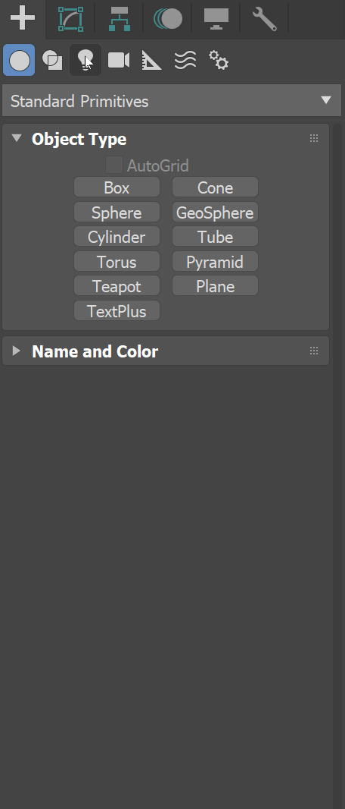
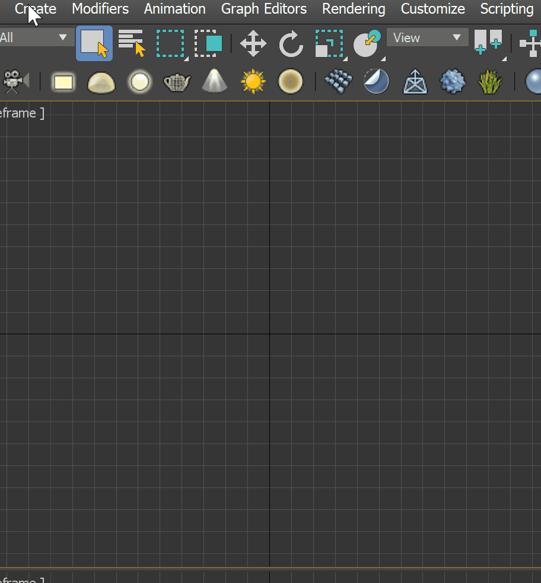
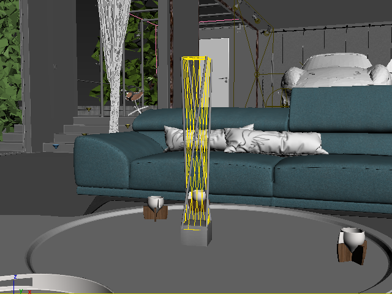
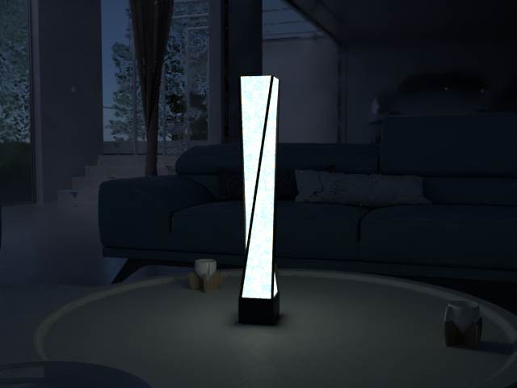
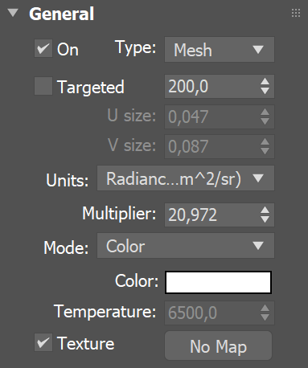
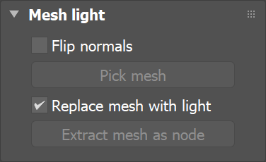
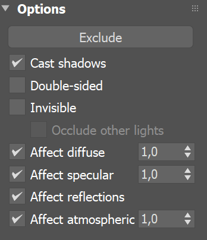
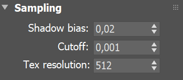
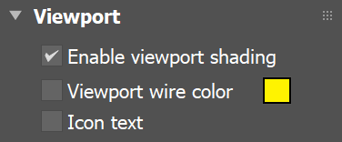

Mesh Light
The Mesh light is a type of VRayLight that takes its shape and size from a mesh object.
Overview
The Mesh Light is a type of VRayLight that turns a mesh object into a light source. It is useful for representing light sources that are not planar or spherical, such as string lights or lanterns.
Note: It is best to enable GI when using a Mesh light. This allows V-Ray to use combined direct and GI sampling of the mesh light for best results. Without GI, the light may produce noisy results for surfaces that are very close to it. Currently, there are some restrictions when using mesh lights; refer to the Notes section below.
UI Path: ||Create menu|| > Lights > V-Ray > ...
||Command panel|| > Create tab > Lights > Choose V-Ray from dropdown > VRayLight > Click and drag in a viewport > Change Type to Mesh

||Create menu|| > Lights > V-Ray > V-Ray Mesh Light > Click and drag in a viewport

||V-Ray Toolbar|| > V-Ray Mesh Light button > Click and drag in a viewport

© Eidos Montreal
Sample Use
A mesh light is being used as a lamp in the images below.

Mesh light in viewport

Mesh light rendered
Parameters - General Rollout
On – Turns the VRayLight on and off.
Type – Specifies the shape and function of the light:
Plane – The VRayLight takes the shape of a planar rectangle. See the Plane, Disc, Sphere Light page.
Sphere – The VRayLight has the shape of a sphere. See the Plane, Disc, Sphere Light page.
Dome – The VRayLight emanates from a spherical or hemispherical dome around the scene extents. See the Dome Light page.
Mesh – Allows the usage of any mesh object as the shape of the light. This page describes the parameters and usage for this type of light.
Disc – The VRayLight takes the shape of a planar disc. See the Plane, Disc, Sphere Light page.
Targeted – When enabled, a separate target object is attached to the light source. This option does not change the lighting behavior of the Mesh light. This option can be changed only on the Modify panel.
Units – Specifies the light units. Using correct units is essential when you work with the VRayPhysicalCamera. The light automatically takes the scene's unit scale into consideration to produce the correct result for the scale you are working with. The possible values are:
Default (image) – The color and multiplier directly determine the visible color of the light without any conversion. The light surface appears with the given color in the final image when seen directly by the camera (assuming there is no color mapping involved).
Luminous power (lm) – Total emitted visible light power measured in lumens. When this setting is used, the intensity of the light does not depend on its size. A typical 100W incandescent light bulb emits about 1500 lms of light.
Luminance (lm/m²/sr) – Visible light surface power measured in lumens per square meter per steradian. When this setting is used, the intensity of the light depends on its size.
Radiant power (W) – Total emitted visible light power measured in watts. When using this setting, the intensity of the light does not depend on its size. Keep in mind that this is not the same as the electric power consumed by a light bulb for example. A typical 100W light bulb only emits between 2 and 3 watts as visible light.
Radiance (W/m²/sr) – Visible light surface power measured in watts per square meter per steradian. When this setting is used, the intensity of the light depends on its size.
Multiplier – Multiplier for the light color, and also the light intensity for some Units settings.
Mode – Specifies the mode in which the color of the light is determined:
Color – When selected, the Color swatch specifies the color of the light rays and of the light source itself when visible in renderings. For Units settings other than Default (image), this color is normalized so that only the color hue is used.
Temperature – When selected, the color of both light rays and the light source itself is specified by the Temperature value expressed in Kelvin.
Texture – Enables the use of a texture for the light surface. The button under this option selects the map to use. The texture intensity is also affected by the Multiplier value. This parameter is not supported when working with the V-Ray GPU render.

Parameters - Mesh Light Rollout
Flip normals – When enabled, the normals of the mesh source are inverted, thus producing light on the opposite side.
Pick mesh – Click to select any triangle mesh object from the scene as the shape of the light. If no mesh is specified, the light assumes a box shape.
Replace mesh with light – If enabled when you pick the mesh, the mesh becomes a light source and the mesh object no longer exists in the scene as a mesh object. When this option is disabled, a copy of the picked mesh's structure is created at the location of the VRayLight icon, and this becomes the light source.
Extract mesh as node – Restores the original geometry from which the mesh light has been created.

Parameters - Options Rollout
Exclude – Excludes objects from being illuminated or from shadow-casting for the light.
Cast shadows – When enabled (the default), the light casts shadows. Turn this option off to disable shadow casting for the light.
Double-sided – This option has no effect for Mesh light sources.
Invisible – Controls whether the shape of the light source is visible in the rendered image. When this option is disabled, the light source is rendered in the color specified by the Color or Temperature setting in the Intensity rollout. This option only affects the visibility of the light when seen directly by the camera or through refractions. The visibility of the light with respect to reflections is controlled by the Affect reflections option.
Note: Regardless of whether this option is enabled, the light source is still taken into account by Global Illumination calculations, which might cause secondary GI rays to be blocked by or bounced off the light's surface. To make the light completely invisible to GI, place a VRayColor texture map into the light's texture slot and set the alpha value for the VRayColor map to 0.0.
Occlude other lights – Controls the behavior of invisible lights in relation to other light sources. When enabled, the light blocks the lighting from other lights as if it's visible. Also in reflections the light behaves as it's visible and occludes other lights. When disabled, the light is transparent for other lights and does not occlude them. This option doesn't affect visible lights (as they always occlude other lights) and dome lights (which are always additive).
Affect diffuse – Determines whether the light affects the diffuse portion of the materials. The Multiplier value on the Intensity rollout controls the light's contribution to the diffuse portion of the materials.
Affect specular – Determines whether the light affects the specular portion of the materials. The Multiplier value on the Intensity rollout controls the light's contribution to specular reflections.
Affect reflections – Specifies whether the light source appears in reflections.
Affect atmospherics - Specifies whether the light influences the atmospheric effects in the scene. The value determines the amount of involvement.

Parameters - Sampling Rollout
Shadow bias – This value moves the shadow toward or away from the shadow-casting object (or objects). Lower values move the shadow toward the object(s), while higher values move it away. If this value is too low, shadows can "leak" through places they shouldn't, produce moire patterns or make out-of-place dark areas on meshes. If this value is too high, shadows can "detach" from an object. If the value is too extreme in either direction, shadows might not appear in the rendering at all.
Cutoff – Specifies a threshold for the light's intensity, cutting off the light's effect on a surface when it falls below this value. Lights lose intensity due to GI bouncing or decay. When light hits a surface but its intensity falls below the cutoff, the effect of the light on that surface is not computed. This can be useful in scenes with many lights, where you want to limit the effect of the lights to some distance around them or reduce computations (and thus reduce rendering time) where the light's impact is negligible. Larger values limit the light's effect on objects to a smaller area around the light source, while lower values increase the range of the light's effect. If you specify 0.0, there is no cutoff and the light is calculated for all surfaces regardless of intensity loss. The default value is 0.001. This parameter is not available when the renderer is set to GPU.
Tex resolution – Specifies the resolution at which the texture is resampled for importance sampling. This parameter is not supported when working with the V-Ray GPU render.

Parameters - Viewport Rollout
Enable viewport shading – When enabled, the effect of the light is visible in the viewport.
Viewport wire color – When enabled, the light's wireframe is displayed in the specified color in viewports.
Icon text – Enables or disables the preview of the light name in the viewport.

Notes
-
When using Mesh lights, it is best to have GI enabled. This allows V-Ray to use combined direct and indirect sampling for the light, which greatly reduces the noise for surfaces close to the light.
-
Currently, Mesh lights do not work properly if the mesh source object has motion blur applied to it. This will be implemented in a future release. Motion blur works properly for Plane, Disc and Sphere lights.
-
When a Mesh light is visible in a rendering, the edges of the light source can appear to be aliased. This happens because the light source color is usually very, very bright, far beyond the range of what an ordinary monitor can display, and antialiasing involves changing the colors of pixels at the edges of objects to a color midway between two other colors. When V-Ray applies antialiasing to a light source's edges, any colors midway between the light color and surrounding object colors are still very bright, beyond what a monitor can display, and the antialiasing pixels appear to be the same color as the light source. To solve this problem, use a VRaySoftbox texture on the light source, or use Lens Effects to soften the edges of the lights after rendering.